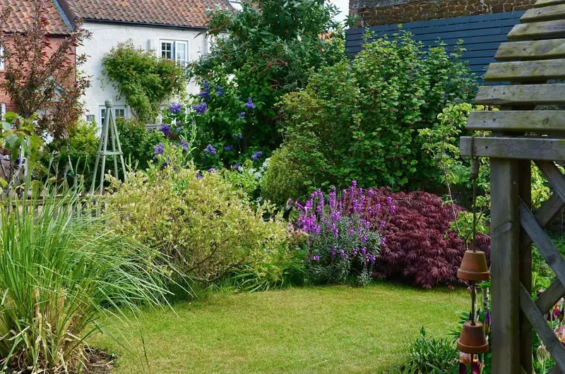
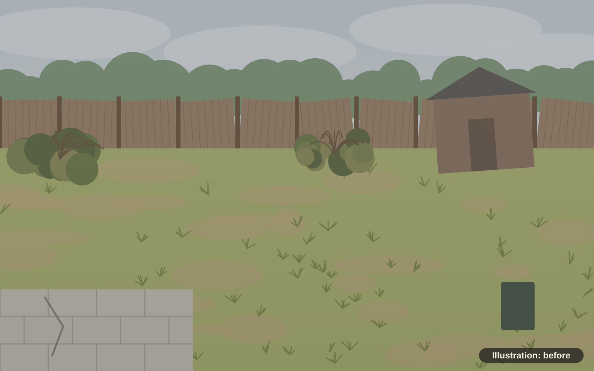
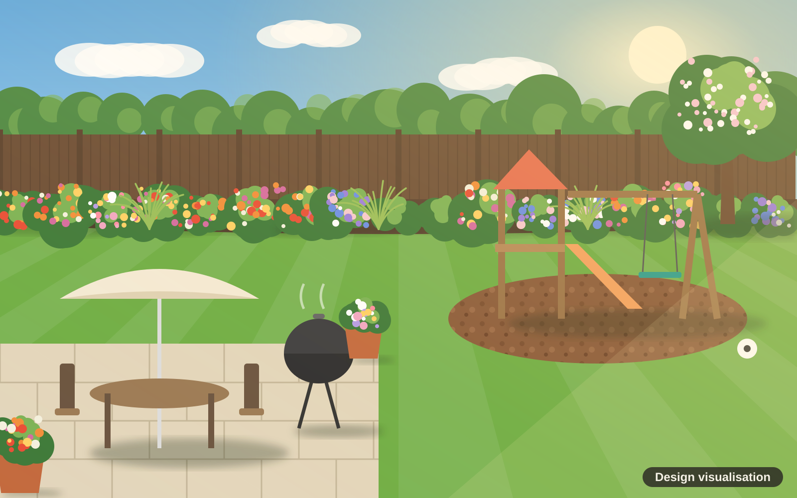
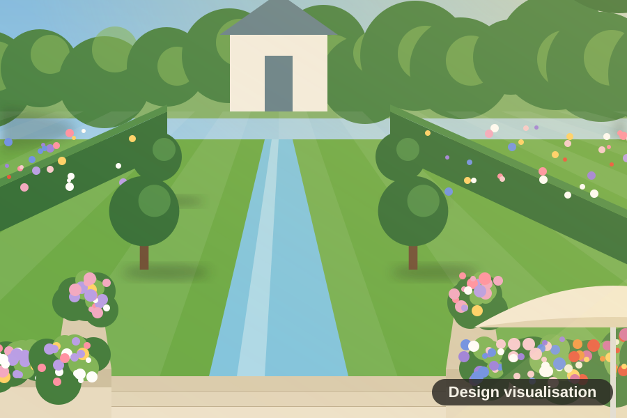

Stock photo
Stock photoGarden design
A measured survey, a layout plan and a visualisation, so you can see the finished garden before any digging starts.

Garden design and landscaping
From a tiny terrace to a garden with a view, Fernhill designs and builds outdoor spaces you will use every day. See the design first, then watch it come to life.
Why it matters
It is where the morning cup of tea tastes better, where the children burn off energy, and where summer evenings stretch out round the fire. When the garden works, it's where you spend most of your time.
Most gardens never get there. They end up as a patch of lawn and a fence you'd rather not look at. We change that. A Fernhill garden is designed around how you actually live, then built properly so it looks just as good in five years.
Meet Sam, our designer

BeforeDesign visualisationTransformations
Pick the one that sounds like yours to see the before and after.
What we do
Stock photoA measured survey, a layout plan and a visualisation, so you can see the finished garden before any digging starts.
 Stock photo
Stock photoPatios, decks, paths, steps and walls, laid on a proper base so they stay level for years.
 Stock photo
Stock photoBorders and pots chosen for your soil, your light and how much time you want to spend looking after them.
 Stock photo
Stock photoNew turf, levelling, safe play surfaces and clean edges that make the whole garden look finished.
 Stock photo
Stock photoBamboo, reed and slatted screens, fence panels, trellis and gates for privacy that looks good.
 Stock photo
Stock photoPergolas and arches, plus pruning, hedge cutting and tidy-ups through the year to keep it all looking its best.

Meet the gardener
"I've spent [20+] years with my hands in the soil, and I still get a kick out of the moment a client walks out and sees their new garden for the first time."
Sam designs every garden personally and is on site through the build. One person, start to finish, who knows your garden inside out.
Read Sam's storyHow it works
Sam comes round, walks the garden with you and asks how you want to use it.
You get a plan and a visualisation, so you can see it before you commit.
One written price with what is included. No surprises later.
Our team builds it, keeps the site tidy and talks you through aftercare.
What clients say
These are sample testimonials for this concept site, not real reviews.
We use the garden more than the living room now. Sam drew it, we said yes, and it came out exactly like the picture.
The kids are outside every day and we finally have somewhere to eat in the sun. Tidy, on time, no surprises.
Friends walk out onto the terrace and just stop. It was a field of brambles two summers ago.
Tell us a little about your space. Sam will come round, listen, and send a clear written quote. No cost, no pressure.